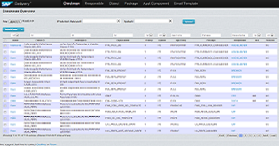

Welcome to the Delivery Manageent Task Board!
Delivery & Quality in FIN Shanghai,Scrum Master and Quality Managememt can share the information or raise the question during the project execution. CHECKMAN Message Done_Criteria report Backlogitems.

What’s New
Now you can referred and check your team’s Delivery information:
Upgrading
Add IMS to responsible ,and fixed search bug~~
This System is developing and improving,any suggestions please fell free to tell us here
And you can contact with Geoffrey Zhang